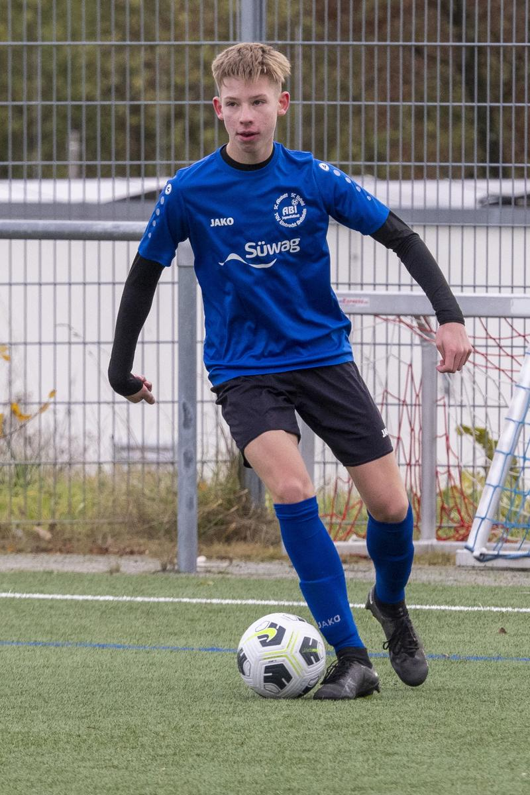
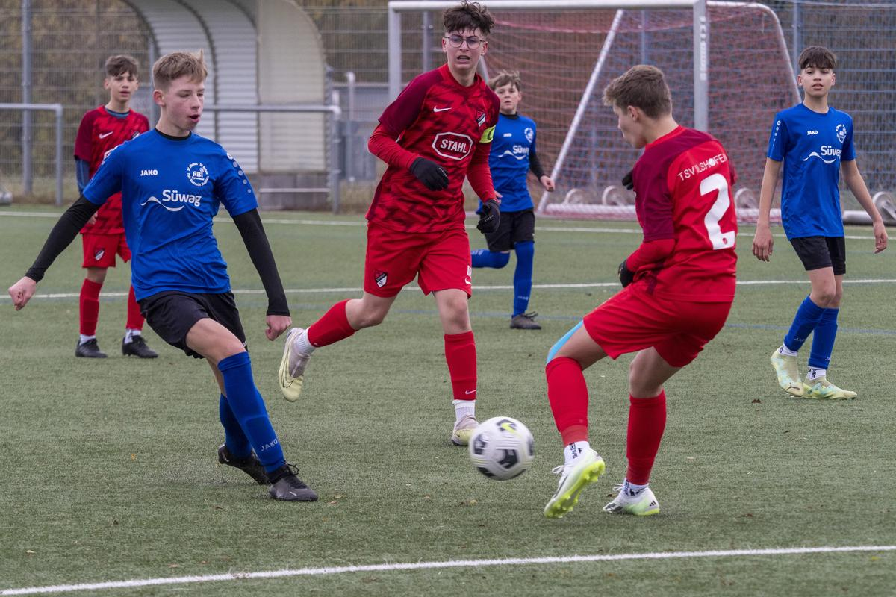
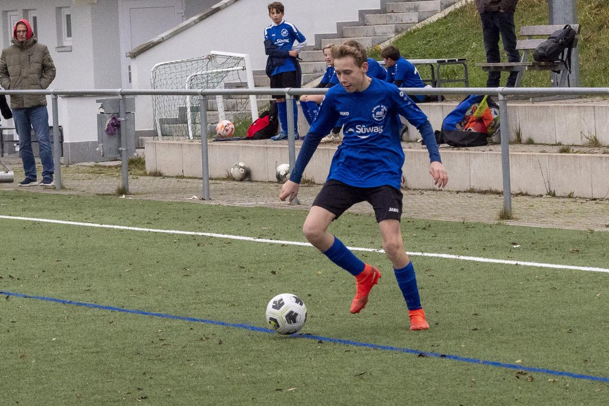
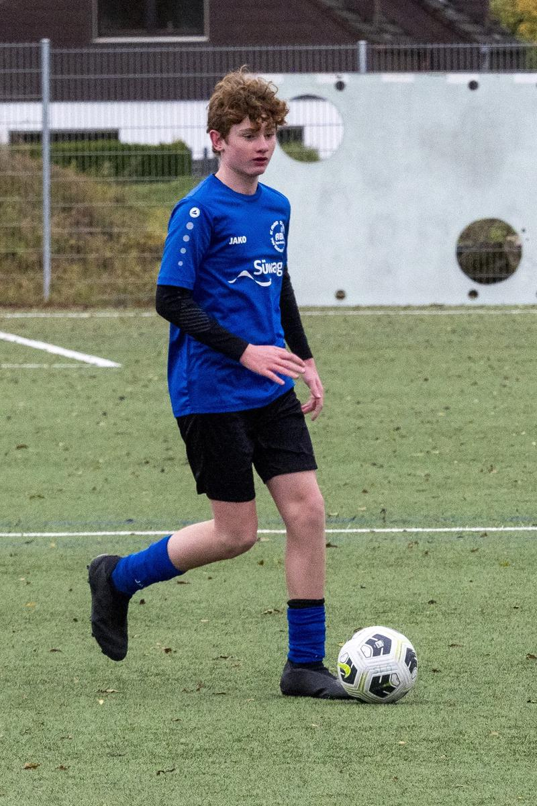
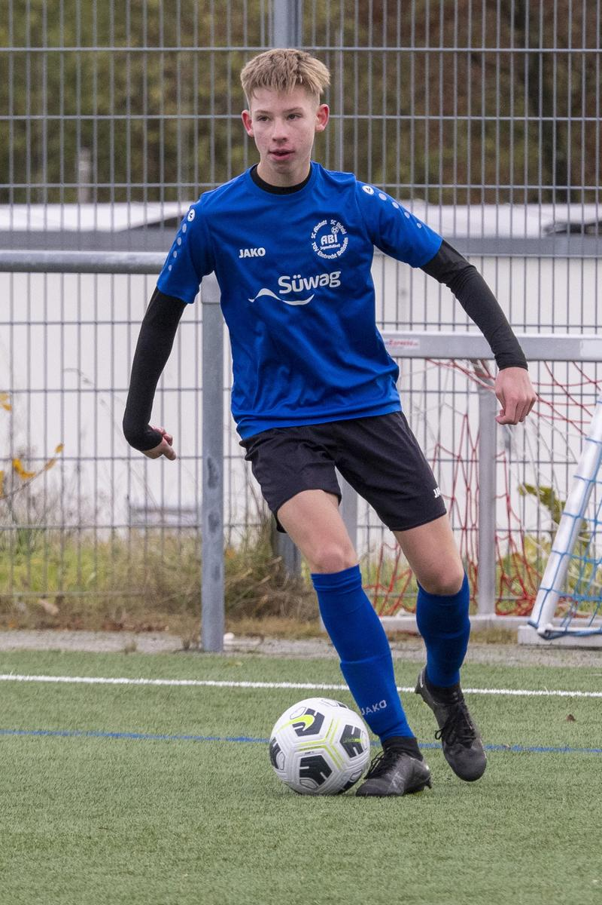
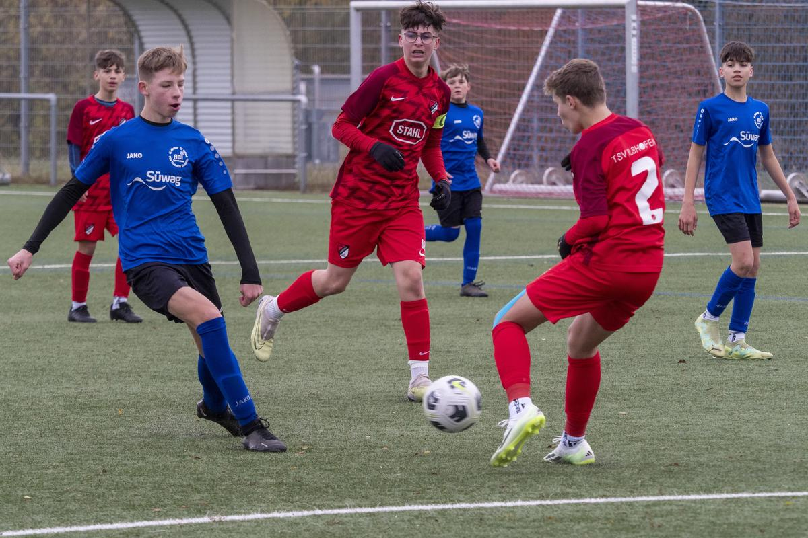
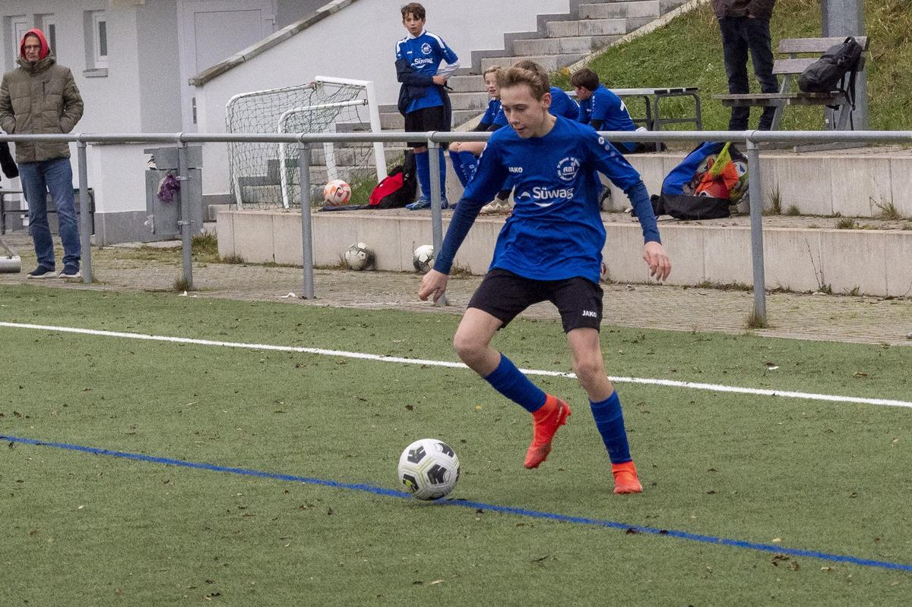
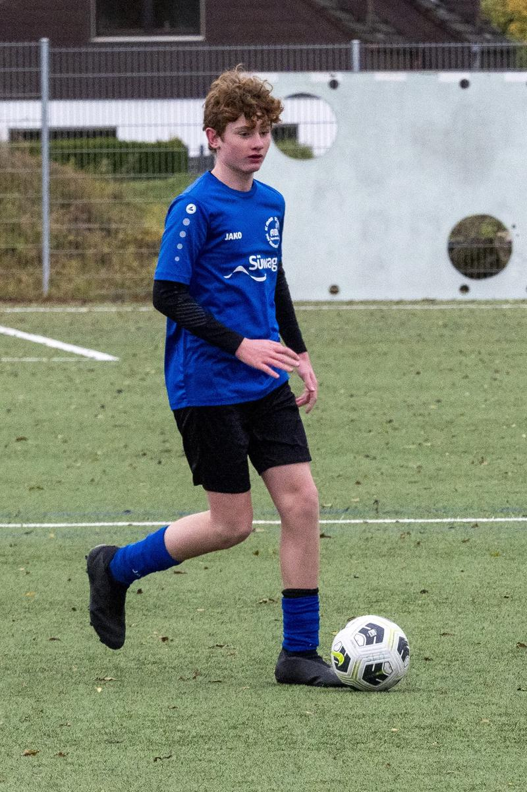

C-Spiele der KW 46
TSV Ilshofen - ABI C1-Junioren 0:14
Am Samstag spielten die ABI C1-Junioren gegen den Tabellenletzten aus Ilshofen. Da es einige Absagen gab, halfen drei Jungs der D1 kurzfristig aus. Dennoch sollte ein klarer Sieg möglich sein. Die Mannschaft begann auch fulminant und lag bereits nach zwei Minuten mit 2:0 in Führung. Danach behielt man klar die Oberhand, dennoch ging die spielerische Linie etwas verloren. Gegen einen aufopferungsvoll kämpfenden Gegner lief man sich immer wieder fest. Vor der Pause gelangen trotz Spiel auf ein Tor lediglich zwei weitere Treffer. Nach der Pause lief der Ball deutlich besser. Schnelles Kurzpassspiel und Doppelpässe sorgten gegen den mittlerweile überforderten Gegner für weitere Treffer. Sowohl Robert als auch Anas konnten dabei ihre ersten Tore in einem Pflichtspiel für die C1 verbuchen.
Insgesamt war es ein gelungener Test für das große Hinrundenfinale am kommenden Wochenende in Bühlerzell gegen den Tabellenführer. Eine homogene und konzentrierte Mannschaftsleistung insbesondere in der zweiten Halbzeit sorgte für den hohen Sieg. Zu erwähnen sind die drei D-Junioren Robert, Dimi und Anton, die sich nahtlos in das Spiel der C1 einbringen konnten.
Es spielten: Jeremy – Moritz – Maximilian – Lenny – Kian – Jonah – Anas – Abdul – Lenni – Mika – Robin – Nick – Anton – Robert – Dimi
Martin Kimmig
TSV Talheim – ABI C2-Junioren 0:11
SGM ABI C2 - Qualifikationsstaffelmeister!
Die C2 trat zu ihrem letzten Spiel in der Qualifikationsstaffel beim TSV Talheim an. Leider sah der Platz nach den Regenfällen der letzten Tage eher wie ein Rübenacker aus und nicht wie ein Rasenplatz für technischen Fußball. Also ging es darum mit viel Einsatz die weiße Weste auf dem tiefen und rutschigen Rasen zu behalten. Die Mannschaft ging gleich mit der richtigen Einstellung zu Werke und ging schon nach 3 Minuten verdient in Führung. Im weiteren Verlauf des Spiels zeigte es sich, dass der Gegner „nichts von uns wollte“, so dass in regelmäßigen Abständen die weiteren Tore folgten. Zur Pause stand es dann 6:0. Auch in der zweiten Hälfte ließ die Mannschaft nichts anbrennen und legte dem Gegner weitere 5 Eier ins Nest. Alles in Allem ein herausragender Sieg mit dem die Mannschaft sich mit 8 Siegen aus 8 Spielen für die Leistungsstaffel qualifizierte. Dies ist für die ABI C2-Mannschaft ein phänomenaler und historischer Erfolg.
Gegen Talheim spielten: Daniil, Hagen, Alex, Lenny, Sebastian, Niklas, Uvejs, Paul, Raphael, Muhammad, Arian, Jakob und Fabian.
Jürgen Sonnleitner
 






